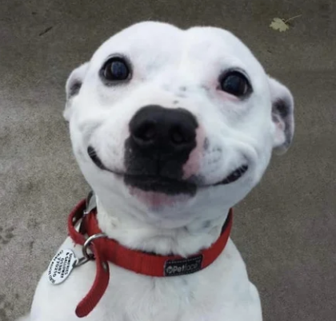

Cup Decorating Bot :)
Цей чат-бот створений, щоб допомогти вам із декоруванням чашок.
Ось приклади питань, на які він може відповісти:
- Як прикрасити чашку для подарунка?
- Які матеріали краще використовувати для декору?
- Чи можна декорувати чашки фарбами?
- Яка техніка декорування чашки підійде початківцю?
